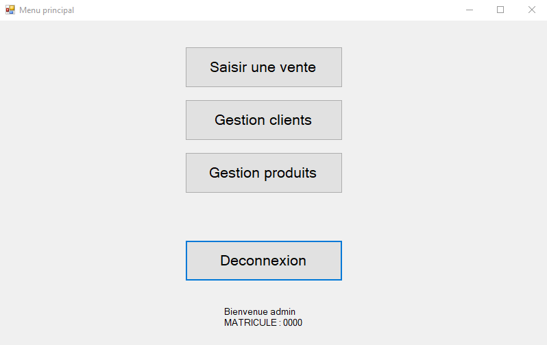
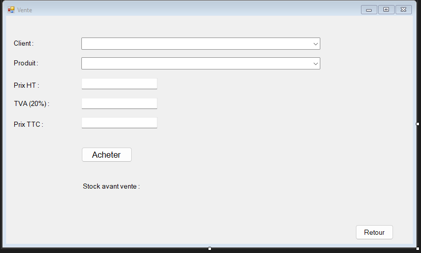
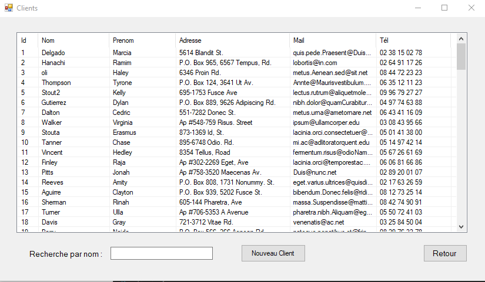

Sio-SHOP
Sio-SHOP est une réalisation en C# sous le framework WindowsForms dont le but était de réaliser une mini boutique permettant de vendre toutes sortes de voiture à des clients enregistrès dans une base de donnée.
Les réalisations
Pour commencer l'application il a fallu réaliser un système de connexion avec un identifiant et un mot de passe, la base de donnée contient donc l'identifiant et le mot sauvegardé d'un employé et à l'aide d'une fonction on vérifie si les valeurs insérés correspondent à celles de la base de donnée
Design du système de connexion

Une fois connecté l'employé possède plusieurs choix soit "saisir une vente" soit "gestion clients" soit "gestion produits"
Design du menu
Lorsque l'employé clique sur l'option "Saisir une vente" l'employé insère les différentes données concernant la vente comme le nom de l'acheteur et le nom du produit
Design saisir une vente
Lorsque l'employé clique sur l'option "Gestion clients" l'employé peut rechercher un client en particulier, le modifier en double cliquant dessus, ou insérer un nouveau client dans la base de donnée
Design gestion clients
Lorsque l'employé clique sur l'option "Gestion produit" l'employé peut rechercher un produit par marque, le modifier en double cliquant dessus, insérer un nouveau produit dans la base de donnée ou mettre à jour le stock à l'aide d'une fonction lisant les données d'un fichier excel